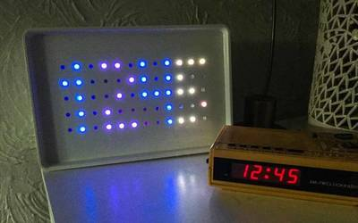

2016-07-21 - Nº 64

Editorial
Esta é a Newsletter Nº 64 que se apresenta com o mesmo formato que as anteriores. Se gostar da Newsletter partilhe-a!
Todas as Newsletters encontram-se indexadas no link.
Esta Newsletter tem os seguintes tópicos:
Faz hoje precisamente 47 anos que a Apollo 11, a bordo do foguetão Saturno V, aterrou na Lua e foi proferida pelo astronauta Neil Armstrong a famosa expressão 'That's one small step for man, one giant leap for mankind.' O SoftBank Japonês vai comprar a ARM. A Google, usando o DeepMind vai reduzir os custos de refrigeração dos datacenters em 40%. Fez ontem 40 anos que aterraram os primeiros sistemas robotizados em Marte.
Na Newsletter desta semana apresentamos diversos projetos de maker. Na rubrica "Documentação" apresentamos sete livros (eBooks) que podem ser descarregados livremente e que esta semana são sobre Injeção de dependências com Unity, dominar o teu espaço - mantém-te seguro Online, Os segredos do Windows 10, classificação de fontes, gestão de tempo para pessoas criativas, impressão 3D de baixo custo para a Ciência, educação e desenvolvimento sustentado eo essencial do Minecraft. Esta semana saiu a revista newelectronics de 12 de Julho 2016.
 João Alves ([email protected])
João Alves ([email protected])
O conteúdo da Newsletter encontra-se sob a licença  Creative Commons Attribution-NonCommercial-ShareAlike 4.0 International License.
Creative Commons Attribution-NonCommercial-ShareAlike 4.0 International License.
Novidades da Semana ^
SoftBank + ARM £24.3bn investment in future of technology
"Two companies with a shared vision of pushing the limits of technology. Coming together to accelerate ARM’s leadership in technologies for the future. Assurance to create over 1,500 additional ARM jobs in the UK over the next five years and increase headcount outside the UK"
DEEPMIND AI reduces google data centre cooling bill by 40%
"From smartphone assistants to image recognition and translation, machine learning already helps us in our everyday lives. But it can also help us to tackle some of the world’s most challenging physical problems -- such as energy consumption. Large-scale commercial and industrial systems like data centres consume a lot of energy, and while much has been done to stem the growth of energy use, there remains a lot more to do given the world’s increasing need for computing power. Reducing energy usage has been a major focus for us over the past 10 years: we have built our own super-efficient servers at Google, invented more efficient ways to cool our data centres and invested heavily in green energy sources, with the goal of being powered 100 percent by renewable energy. Compared to five years ago, we now get around 3.5 times the computing power out of the same amount of energy, and we continue to make many improvements each year. Major breakthroughs, however, are few and far between -- which is why we are excited to share that by applying DeepMind’s machine learning to our own Google data centres, we’ve managed to reduce the amount of energy we use for cooling by up to 40 percent. In any large scale energy-consuming environment, this would be a huge improvement. Given how sophisticated Google’s data centres are already, it’s a phenomenal step forward."
Robots have been visiting Mars for 40 years today
"Mars at midday. Or, rather, mid-sol. Welcome to Chryse Planitia, as humans first saw it 40 years ago today, when the first robot from Earth landed on the Red Planet. Viking 1 was supposed to land on July 4, the bicentennial of the Declaration of Independence, but its original landing site was too rocky. The probe orbited Mars a while longer until its human managers could find a flatter, safer spot, and this is the one they came up with. On the very same day seven years prior, humans had landed on the moon, another feat that also remains astonishing. Think about that: In less than a decade, people went to the moon and sent a robot to Mars, and we saw video of the surfaces of two alien worlds for the first time."
Outras notícias
- Japan Will Make Its Last-Ever VCR This Month
- ARM, Symantec and others create IoT security protocol
- Microchip Launches Lowest Power, Cost-Effective PIC32 Family With Core Independent Peripherals
- TI introduces the industry's fastest isolated gate driver for high-voltage applications
- World premiere: Mercedes-Benz Future Bus with CityPilot – a milestone on the way to the autonomous city bus, and a revolutionary mobility system for the future
- Cypress Simplifies Embedded System Design with New Low-Pin-Count HyperRAM Memory
- NASA's Next Mars Rover Progresses Toward 2020 Launch
- LETI Develops 3D Network-on-Chip to Improve High-Performance Computing
- Tesla CEO Elon Musk Announces Heavy Truck, Ride Sharing Fleet of Cars
Ciência e Tecnologia ^
Scientists Glimpse Inner Workings of Atomically Thin Transistors

"With an eye to the next generation of tech gadgetry, a team of physicists at The University of Texas at Austin has had the first-ever glimpse into what happens inside an atomically thin semiconductor device. In doing so, they discovered that an essential function for computing may be possible within a space so small that it’s effectively one-dimensional."
A battery inspired by vitamins
"Harvard researchers have identified a whole new class of high-performing organic molecules, inspired by vitamin B2, that can safely store electricity from intermittent energy sources like solar and wind power in large batteries. The development builds on previous work in which the team developed a high-capacity flow battery that stored energy in organic molecules called quinones and a food additive called ferrocyanide. That advance was a game-changer, delivering the first high-performance, non-flammable, non-toxic, non-corrosive, and low-cost chemicals that could enable large-scale, inexpensive electricity storage. While the versatile quinones show great promise for flow batteries, Harvard researchers continued to explore other organic molecules in pursuit of even better performance. But finding that same versatility in other organic systems has been challenging."
Smallest hard disk to date writes information atom by atom
"very day, modern society creates more than a billion gigabytes of new data. To store all this data, it is increasingly important that each single bit occupies as little space as possible. A team of scientists at the Kavli Institute of Nanoscience at Delft University managed to bring this reduction to the ultimate limit: they built a memory of 1 kilobyte (8,000 bits), where each bit is represented by the position of one single chlorine atom. “In theory, this storage density would allow all books ever created by humans to be written on a single post stamp”, says lead-scientist Sander Otte. They reached a storage density of 500 Terabits per square inch (Tbpsi), 500 times better than the best commercial hard disk currently available. His team reports on this memory in Nature Nanotechnology on Monday July 18."
Stanford students get creative with robots
"After learning new software and programming languages, Stanford students in the Artificial Intelligence Laboratory have an opportunity to choose a creative task and design a robot to perform the task for demonstration. The tasks call for a wide range of fundamental skills, but generally require the robot to sense where it is in space, detect objects around it, and then autonomously interact with those objects in its environment. Recent projects include placing dominoes, playing the xylophone, and sketching out an image."
Breakthrough in powering wireless sensors
"Researchers at The Australian National University (ANU) are a step closer to harvesting renewable or ambient energy from mobile phone base stations to power battery-operated wireless sensors used in industries including health and agriculture. Lead researcher Dr Salman Durrani from the ANU Research School of Engineering said current wireless sensors for buildings, biomedical applications or wildlife monitoring use batteries which are often difficult to replace."
Documentação ^
A documentação é parte essencial do processo de aprendizagem e a Internet além de artigos interessantes de explorar também tem alguma documentação em formato PDF interessante de ler. Todos os links aqui apresentados são para conteúdo disponibilizado livremente pelo editor do livro.
Livros
Dependency Injection with Unity
"Over the years software systems have evolutionarily become more and more complex. One of the techniques for dealing with this inherent complexity of software systems is dependency injection – a design pattern that allows the removal of hard-coded dependencies and makes it possible to assemble a service by changing dependencies easily, whether at run-time or compile-time. It promotes code reuse and loosely-coupled design which leads to more easily maintainable and flexible code. The guide you are holding in your hands is a primer on using dependency injection with Unity – a lightweight extensible dependency injection container built by the Microsoft patterns & practices team. It covers various styles of dependency injection and also additional capabilities of Unity container, such as object lifetime management, interception, and registration by convention. It also discusses the advanced topics of enhancing Unity with your custom extensions. "
Own Your Space–Keep Yourself and Your Stuff Safe Online
"This is a book for every teen and an essential resource for every parent and teacher. Especially though, this is a book for the computer savvy, keyboard-comfy teens who use the Net every day and want to know how to secure their systems, preserve their Net lifestyles, and protect their data. This book provides important details to keep those teens, their privacy, their identities, and their reputations safe in cyberspace. In short, this book is for normal teenagers—like you. We realize that you understand quite a bit about computers, probably a lot more than your parents. We also know from our own teens where the gaps in your computer knowledge tend to fall. We wrote this book to address those gaps. "
Windows 10 IT Pro Essentials Support Secrets
"This ebook is for anyone whose responsibilities include training people to use Windows 10. That group includes full-time professional trainers, of course, but it also includes IT pros and those brave souls who staff the help desk in corporations. Most of all, it includes the incredibly large population of people who have earned a reputation for being “the person who knows Windows.” With that knowledge comes a seemingly endless stream of questions from friends, family, and coworkers. As Windows 10 moves into its second full year and begins to take over an increasing share of the installed base of PCs, many of those questions are going to begin “How do I…”"
-
"This excellent 27-page ebook details the 10 key classifications for typography, providing the basic understanding you'll need to gain a grasp of the fundamentals of type selection. The book covers a brief history for each of the classifications, as well as the core characteristics of the style."
Time Management for Creative People
"You may be insanely creative, but that doesn't translate into success if you're not getting things done effectively. Luckily business coach and trainer Mark McGuinness has distilled his knowledge of what it takes to get original work done in the midst of the demands and distractions of the 21st century workplace into a free 32-page ebook. It's full of practical advice aimed to help you achieve your artistic and professional goals, with subjects including finding the method in your creative madness, identifying and prioritising your most important work, and getting in the right state of mind for focused work."
Low-cost 3D Printing for Science, Education and Sustainable Development
"Low-cost, three-dimensional (3D) desktop printing, although still in its infancy, is rapidly maturing, with seemingly unlimited potential. The hope is that this cutting-edge 3D technology will open new dimensions to science and education, and will make a marked impact in developing countries. This book gives a reasonable, first overview of current research on 3D printing. It aims to inspire curiosity and understanding in young scholars and new generations of scientists to motivate them to start building up their own 3D printing experiences and to explore the huge potential this technology provides –with the final goal of putting learning literally in their hands."
-
"Minecraft is the biggest game on the planet with more than 30 million copies sold across numerous hardware platforms. Not bad for a sandbox that doesn’t really have a point. The version of Minecraft available for Raspberry Pi is different. Firstly it’s entirely free and secondly it comes with a powerful API, which allows you to hack and make entire virtual worlds with a few simple lines of code. In this book you’ll learn how to do some amazing things, including controlling things in the real world using the Raspberry Pi’s GPIO pins, make your own mini games and just about anything else you can imagine."
Revistas
-
"New Electronics is a fortnightly magazine focusing on technological innovation, news and the latest developments in the electronics sector. Downloadable as a digital page turner or pdf file, or offered as a hard copy, the New Electronics magazine is available in a format to suit you."
Modelos 3D ^
Com a disponibilidade de ferramentas que permitem dar azo a nossa imaginação na criação de peças 3D e espaços como o thingiverse para as publicar, esta rubrica apresenta alguns modelos selecionados que poderão ser úteis.
The UnLimbited Arm v2.0 - Alfie Edition
Team UnLimibited are very proud to release version 2.0 of their UnLimbited arm design; named the Alfie Edition after it's first recipient.
The UnLimbited Arm 2.0 is fully parametric and customisable using Thingiverse Customiser to produce all the files correctly scaled based on a recipients real world measurements.
This is the next generation deviced based upon the popular 1.7 Isabella edition that was released last year as found here :- http://www.teamunlimbited.org/the-unlimbited-arm/
Please check out our Blog and Facebook page, be sure to like us and follow our work. If you want to help us then please consider making a donation.
Blog :- http://www.teamunlimbited.org/
Facebook :- https://www.facebook.com/teamunlimbited/
Donation :- https://secure.squarespace.com/commerce/donate?donatePageId=55c484fae4b0a45eb98717b7
We would like to give a BIG thank you to the following people for their advice and help on this release.
Steve wood AKA Gyrobot for his ongoing support - http://www.gyrobot.co.uk/ Tony Buser from Thingiverse for his advice on customiser. Jen Own from Enabling The Future for her continued effort to blog the activities of the e-NABLE community - http://www.enablingthefuture.org/
We also like to thank the e-NABLE community and Everyone else who has helped support us over the last year so we can keep giving the world a helping hand; or arm in this case !
For more information on e-NABLE visit http://www.enablingthefuture.org/ To get involved with the e-NABLE community please visit https://plus.google.com/communities/102497715636887179986
Customizeable Pipe Bender (for Heatpipes)
Parametric, fully 3D printable Pipe Bender I designed last Sunday to fight boredom and save 20€.
Bending radius should be more than 3 times the diameter of the heatpipe and no more than 90 degrees.
Three holes for up to 6mm, up to 8mm and up to 10mm heatpipe diameter.
Tolerance of 0.2mm worked fine for a Replicator 5th (no sanding nor drilling required). Adjust it to your needs in the OpenScad file or with the Customizer.
I'll upload the .stl files for a radius of 30mm, you can change it to your specific value in the OpenScad file or with the Customizer.
Update1 (RC2.scad): Rounded the bending lever for smoother results.
Update2 (RC3.scad): Set the default back to r=30mm and updated the .stl
Update3 (RC4.scad): Turned the lever 90 degrees again for easier printing of the axle mounting hole
Update4 (RC5.scad): Bending lever is rounded only on the backside now as it should be
Update5 (RC6.scad): Fixed an error for high radius bending lever and tolerance variable is a constricted slider now
Customizable PC Bay Drawer
This is a customizable drawer that can be used with any 5.25" PC drive bay. Many computers have additional bays so why not put them to use?. This drawer was created to store PC related parts like USB keys, and SD cards.
The dimensions for the drawer were measured for an ANTEC 300 PC tower. Make sure to measure your PC bays and use the Customizer to adjust the drawer size to meet your needs.
Note: the drawer can take a long time to render when using OpenSCAD. To improve rendering times either reduce the number of holes added to the front face of the drawer or remove the holes on the front face altogether. The front face holes are entirely cosmetic, they were added to match the front grill of my PC case.
Edit 2016/07/18
I've added a new drawer option which will add a hole rather than a tab or handle for the drawer. This way you can still open the drawer but there won't be a tab or handle that could potentially break off.
Projetos Maker ^
Diversos Projetos interessantes.
-
"This system will water your plants automatically, monitor the level of the water reservoir and will keep your plants happy on many aspects."
Just another esp8266 temp logger
"I know I know what your thinking, Heres another temp logger based on the esp8266. After looking around on the internet it looks like every man and his dog are making temp loggers powered by everyones favourite IoT dev board, the esp8266. Ever since the esp8266 came out I wanted to do a project with it, Im glad I delayed until now before starting to develop my temp logger. Looking back I first ordered a esp-01 way back in Nov of 2014 but back then there wasnt really much to do with them since they didnt have a replacement firmware they have now, You still had to use a micro to control it via AT commands."
-

"Currently I'm working on a device to electrocute home insects like cockroaches, progress is small because they are smarter than I thought, but that's a different story. For that project I had to find a source of sufficient high voltage and output power. Presented in previous post 5V/400V converter had insufficient voltage and power, another option, flyback transformer was too dangerous to be used here."
Mastermind based on a atmega328p

"Reproduction of mastermind game usig a micro-controller. Different levels of dificulty (4-6 colors, with or without color repetition)"
Arduino Powered Sunrise Alarm Clock with Neopixels

"I'm not a fan of getting up. I'm also often very tired in the mornings (and usually grumpy. But I digress.) I was doing some reading about how to get better sleep when I came across a guy who did some sleep experiments. Some were pretty wacky, but I liked the idea he mentioned about getting up at the same time every day, sort of like a mechanism to condition your body to get up more easily. I had also read various things about blue light, most prominently in the whole screens keeping children awake in the evening thing, but also in a few otherplaces. Having seen the sun come up a time or two, the blue light before the sun rises can be pretty spectacular and so I figured I could try and do something like that to help me wake up naturally rather than with the massive jolt that my current alarm clock induces with its, frankly, terrifying sound."
-
"Building a Persistance of Vision globe"
Make Your Own Smartwatch From An Old Cell Phone
"What Id like to do for this crazy/ambitions project is turn an old cell phone into a smartwatch. So obviously an old cell phone is required. The primary reason for this project is simply that I had an old cell phone laying around and wanted to find a creative way to repurpose it. The one I had is a Nokia 1100, but most other old cell phones would work, so long as you can find the schematics for the LCD online. Taking apart the 1100, there werent too many scavenge-able parts to choose from. First and foremost, there was the LCD screen, then I was also able to extract a vibrating motor, a small speaker, as well as a protective cover for the LCD. What youre able to scavenge really depends on what type of phone you have, and how old it is. The older the phone, the more scavenge-able parts you will find."
TEA5767 FM Radio With Digital Volume (2)
"This version of FM radio with TEA5767 with digital volume use Arduino Uno development board instead Arduino Mega like in previous artilce. Digital volume in 15 steps is made with MCP4261-502E/P dual digital potentiometer who work as real potentiometer (logarithmic style)..."
-
"This project utilizes a 22 x 13 matrix of addressable RGB LEDs to visualize a weather forecast pulled from the Weather Underground API. A Raspberry Pi runs a python program designed to fetch weather forecast data from the API at regular intervals, parse the data into temperature, wind speed, and weather condition arrays, and then light specific sets of LED's that represent words in the LED matrix. Mounted in its own enclosure, the project can set on a shelf, desk, or hang on a wall as a visual display for upcoming weather conditions over the next 12 hours."
VXO based PLL Frequency Synthesizer for 7 MHz
"In EMRFD, 4.10, Wes provides the schema for a versatile VXO - extending frequency synthesizer. Although, I referred him to Wes for help, a reader asked me some questions and I ended up designing some pieces for him. In order to test some of my ideas, I made a VXO - based synthesizer that tuned from 6.99 to 7.103 MHz using only parts I had in stock."
Control a Relay From Anywhere Using the ESP8266
"As I was building more and more home automation projects using the ESP8266 WiFi chip, I was looking for a simple solution to control my ESP8266 projects remotely. I wanted to be able to control my projects not only from my local WiFi network, but from anywhere in the world, simply by using a web browser. I found many solutions, but none of them were really suited to my requirements. As you might know, I developed my own library called aREST to control most of the wireless projects I make. Therefore, I decided to modify this library to be able to control projects from outside of a local WiFi network. In this article, I will share those new features of aREST with you, and show you how to control a simple relay from anywhere. You will then be able to adapt the project to control any home appliance from anywhere in the world. Lets dive in!"
-
"I know that feeding time is a great way to bond with your pet, but I really wanted to automate the process; especially in the morning! These instructions will outline the components I used to construct the build, as well as some of the pitfalls I had to overcome. The feeder is certainly not perfect and the next version would be different/better, but the building and planning stages have been lots of fun. Please have a look at the images and videos to help get a sense of the feeder. There are two aspects to the feeder: the main chamber(s) feed dry food and the smaller motor dispenses a treat between major feeds. The main chamber is driven by a stepper motor and the treat is driven by a servo motor."
DIY electronic RFID Door Lock with Battery Backup
"The difficult part is not the DES / AES encryption itself. The difficult thing is that NXP does not publish the documentation for these cards. You have to make a Non Disclosure Agreement (NDA) with them and promise that you will not give their holy documentation to anybody else. But this NDA is only made with companies. And in internet you find only very very sparse information about Desfire EV1."
-
"So, you want to make your own remote controlled lawn mower like in the movie "Honey, I shrunk the kids" ? You should. This is a fun project that is very practical and makes mowing the lawn a lot more enjoyable. You will learn a few new skills along the way that will help you be a better maker."
Build Your Own Battery Power Supply

"Have you ever needed to power a project that's not near an outlet? Have you needed to test using different voltages? Are you curious about analog circuits and power? Using Autodesk Circuits and a lead-acid battery, you can create a circuit that will act as a variable power supply, outputting a range of voltages from 5V to 20V. After creating the power supply you could drive motors using variable voltage, power microcontrollers, logic circuits, LED strings, analog circuits, and much more. This is a good way to learn how basic electronic components can be put together, like a puzzle, to accomplish a task. It will also leave you with an awesome mobile power supply to test your projects with!"
-
"Some time ago I passed comment in here about converting an ESP-01 to 32Mb (or 4MB). And here it is in the flesh a 32Mb ESP-01 and also at last Sonoff Upgrades. Now, why would you want to do all of that? I would suggest only if you happen to have lots of ESP-01 units lying around and Ill bet quiet a lot of you do. As for the Sonoffs well, put it this way, I just ordered another 10 chips!"
DIY Rain Alarm Using 555 Timer
"Building a home made rain alarm. This circuit beeps for about 40 seconds when it detects rain. This circuit uses a 555 timer. This circuit can also be used with pressure sensor or with LDR for detecting light"
DIY IR Remote Tester using TSOP1738
"Home made remote tester using TSOP1738. This circuit helps to test the each button of the remote. When you press a button the led in the circuit blinks."
4 Channel RF Remote Controller
"4 Channel RF remote built using PT2262 and PT2272-M4 IC from Princeton technology. PT2262 used as Encoder (Transmitter) and PT2272-M4 Decoder (Receiver) ICs are heart of the project. The receiver provides 4 channel Momentary outputs. All outputs are TTL level can be interface with other circuits or relay board. Transmitter works with 5V to 12V DC. Receiver works with 5V DC. When any of SW1-SW4 (S1-S4) tact switch is pressed the, power is applied to encoder IC and RF transmitter module, the encoder then starts scanning Jumper J1-J8 and transmitting the status of the 8 bits address and data serially. The decoder IC receives the data and compares two times with J1-J8 address jumpers and provides outputs high and also VT LED goes On, if the data is Valid and address of Transmitter and Receiver are same. It is important to have same jumper settings J1-J8 at transmitter and receiver to pair both. Multiple remote can be used to control devices at same location by changing the address codes. All address is Tri-State and offers 6561 combinations."
-

"This Instructable is for those who would like to use your Arduino to output to a TV. Granted the Arduino is only powerful enough to produce a black and white picture it can still be fun to play with and useful for some projects."
-
"This Raspberry Pi, IoT Doorbell is basically a simple smart Door Bell, which takes a photo of who ever rings it, and emails it to the specified email address, and keeps all the photos in a folder. (along with going Ding-Dong). This is my first Instructable so i hope you enjoy :) How I have set out setting this up is, the camera is looking at the door bell. I couldn't have the camera above the box because my lead is not long enough"
DIY mini Amplifier using TDA2822
"Building a homemade amplifier using TDA2822. Follow the steps here or watch the video to make your own amplifier"
Arduino Based Text to Morse Translator
"The goal of this project is to create a device able to translate a text into its corresponding Morse code. The text is typed by the user on a computer. The Morse code is displayed through a blinking LED."
Leds and Diodes Tester With USB Power
"I proposes the construction of a leds and diode tester, simple and inexpensive using a USB port for power."
DIY Nunchuck Controller for Electric Skateboards!
"Here's how I built/converted a regular Wii Nunchuck into a Bluetooth Nunchuck Controller for my electric skateboard! If you are not familiar with my series of electric skateboards, I have an excellent set of instructables here, here, and here. I've been using my DIY Smartphone Controller to control the speed of my latest prototype, but I wanted something that was more tactile, and that's what inspired me to build this mini-project! This Nunchuck is also compatible with my old smartphone receiver circuit, meaning you can switch back and forth between using the smartphone app and the nunchuck!"
Raptor 5: a Fully Iron CNC DIY
"So much effort how much satisfaction ... After months of study and work the plans to build a completely iron CNC has come to an end and I think with some success. From the first idea of the project was buzzing through my head a name which then it is more and more consolidated."
Homemade Electricity Generator
"In this instructable ill show how to use dc motor as a generator that powers up 2leds"
Laser Painting with Motion Control and Arduino

"Do you like lasers, motion control, neo-pixels, or glow in the dark art? Of course you do, so why not combine them all! Using various supplies you can 'paint' a picture using laser light. Motion control will let you actuate (aka move) the servos which in turn controls where the laser points. The laser will leave a line on the glow in the dark material and then slowly fade away. The art you make is up to you! Why would you want to do this. Well besides being cool, this project is a good exploration of servos, accelerometers, neo-pixel rings, and control systems. The challenge is combining the various parts and getting them all working together. You will be guided through the steps and technical ideas, and left at the end with your own motion controlled light painter!"
Electromagnetic Field (EMF) Detector with LM358
"In this instructable I will show you how I made an Electromagnetic Field (EMF) detector with dual operational amplifier and 2 inductors. With this device you can hear for example how your TV or phone are working. The circuit is relatively simple. For me the hardest part was drilling the enclosure."
Child Tracking System Using Smartphone and Arduino
"Recently, it is reported that many cases of child between 6 until 12 years old missed or kidnapped every year in world. Because of this threat parents begin to worry about their kids from kidnapping or missing. This proposes an Android based solution to aid the afraid parents to track their kids in real time. At the present, most mobile phones are equipped with Grid location- service capability, this feature allows the owner of the mobile to get the instant position for the devices holder. Since most of kids are able to possess smart mobile phone that equipped with grid location facility this gives us encouragement to propose such solution. The GPS and SMS services that used in Android mobile phones allows the parent to identify their kids location on a real time map. The system has two sides, kid from one side and his/her parent from the other side. The parents device main duty is to send SMS to request from the kids device to get the grid location. On the other end, the kids device is mainly responsible to reply the GPS position to the parents device upon request."
Simple & Cheap Arduino Uno ATmega328 Programmer
"Here's how to build a simple & cheap Arduino Uno ATmega328 Programmer."
Arduino Lightning Detector W/ Real Time Graphing
"Arduino Lightning Detector W/ Real Time Graphing"
-
"This is an easy little project for Arduino beginners that only costs about $12 to make. When a person enters the correct code on the keypad, the box will play a secret message. It could be used as part of a scavenger hunt or could be modified to trigger a door to open or trigger a servo with just a few changes. I used an Arduino Mini Pro for my project, but I think an Arduino Nano is a better choice for most beginners because it has a build in USB port for easy programming, so I wrote this instructable with that in mind even though some of my pictures show a Mini Pro."
Obstacle Avoidance Vehicle using ATmega328P microcontroller

"Obstacle Avoidance Vehicle capable of detecting objects, scanning the area and navigating through the less obstructed path."
-
"In this article I will show you how you can make an Arduino Color Sorter. You can watch the following video or read the written article below."
That's all Folks!